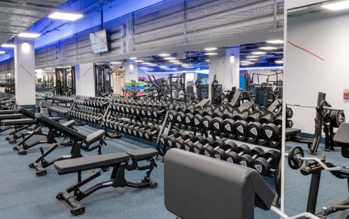

Od 7 miesięcy regularnie chodzę na siłownię i mogę powiedzieć, że widzę pozytywne efekty mojego treningu. Moje ciało zaczyna nabierać bardziej atletycznej sylwetki, a także zauważyłem poprawaę w mojej wydolności fizycznej i ogólnej kondycji. Nieustanne dążenie do poprawy swojego zdrowia i wyglądu jest dla mnie motywacją do kontynuowania mojego treningu na siłowni.
Obecnie chodzę na siłownię 5-6 w tygodniu. Spędzam na niej około dwóch godzin dziennie. Wykonuje głównie treningi siłowe, ale na trzech treningach w tygodniu cwicze swoją kondycję na bieżni.
